Evaluate reliably
With PE-Bench, I study how to evaluate engineering agents beyond simulation success: checking specification compliance, physical consistency, component feasibility, and the evidence supporting a design.
Trustworthy LLMs & agentic systems
I'm a first-year M.S. student in Computer Science at NYU Courant. My research focuses on trustworthy LLMs and agentic systems: evaluating them reliably, correcting them verifiably, and keeping their decisions grounded in evidence.
My work started in trustworthy recommender systems, including machine unlearning and counterfactual explanation, and has since moved to LLM agents, where I build benchmarks, verifiable repair methods, and auditable multi-agent workflows for engineering design.
Before NYU, I received my B.Eng. in Electrical Engineering from Xi'an Jiaotong-Liverpool University and worked as a research assistant with Prof. Fanfan Lin at the ZJU-UIUC Institute.
I'm applying for PhD programs for Fall 2028 entry.
IRAI 2026 Accepted
IEEE IES SYPA Travel Award
ICDM 2026 Accepted
ICONIP 2026 Accepted
ICONIP 2026 Accepted
ICDM 2025
AAAI / IAAI 2027 Under review
NeurIPS 2026 · Evaluations & Datasets Under review
ACM TOIS Under review
From controlling what a model forgets to checking what an agent does.
With PE-Bench, I study how to evaluate engineering agents beyond simulation success: checking specification compliance, physical consistency, component feasibility, and the evidence supporting a design.
PowerFix connects physics-guided diagnosis with constrained patches and independent validation. This continues a broader interest in controllable model behavior, rooted in recommendation unlearning and counterfactual explanation.
PE-GPT 2.0 brings review gates and engineering evidence into multi-agent design. In AMPilot, my iGEM 2026 project, I build an LLM/RAG-assisted antimicrobial peptide workbench with source tracking, checkpointed execution, human approvals, and biosafety-aware output controls.
AMPilot public prototypeCurrent AMPilot development is maintained privately.
M.S. in Computer Science, Courant Institute
Expected August 2028
B.Eng. in Electrical Engineering
Research Assistant with Prof. Fanfan Lin
Trustworthy multi-agent systems for engineering design
Artificial Intelligence Engineer Intern
Heavy-metal wastewater devices · iGEM 2023
I designed three iterations of a protein-based adsorption device in SolidWorks, moving from a flow-through column to an internally circulating design after working through the problem with our wet-lab and modeling teams.
A second design for silver-ion recovery incorporates a waterproof motor for bidirectional circulation, a temperature and humidity sensor, and an ion-selective electrode. I 3D-printed and wired prototype parts with Arduino, teaching myself CAD and embedded systems in my first year.
Full design notes ↗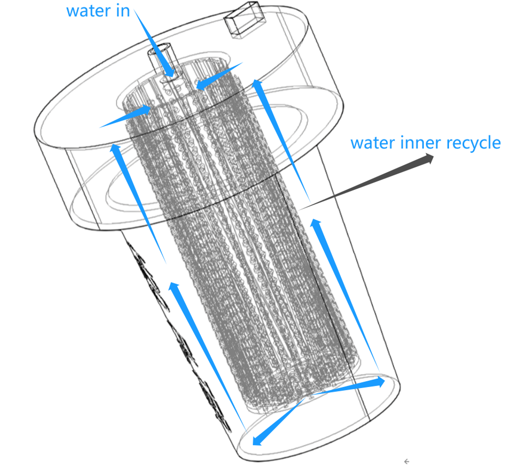
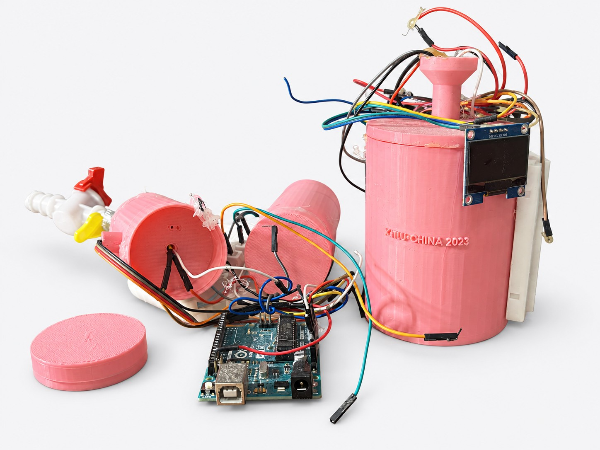
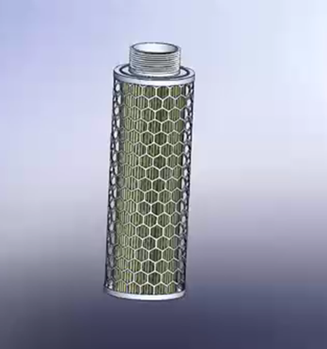
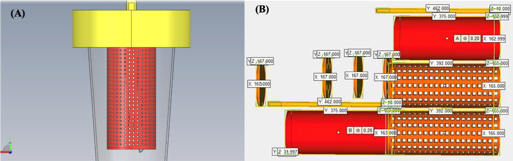
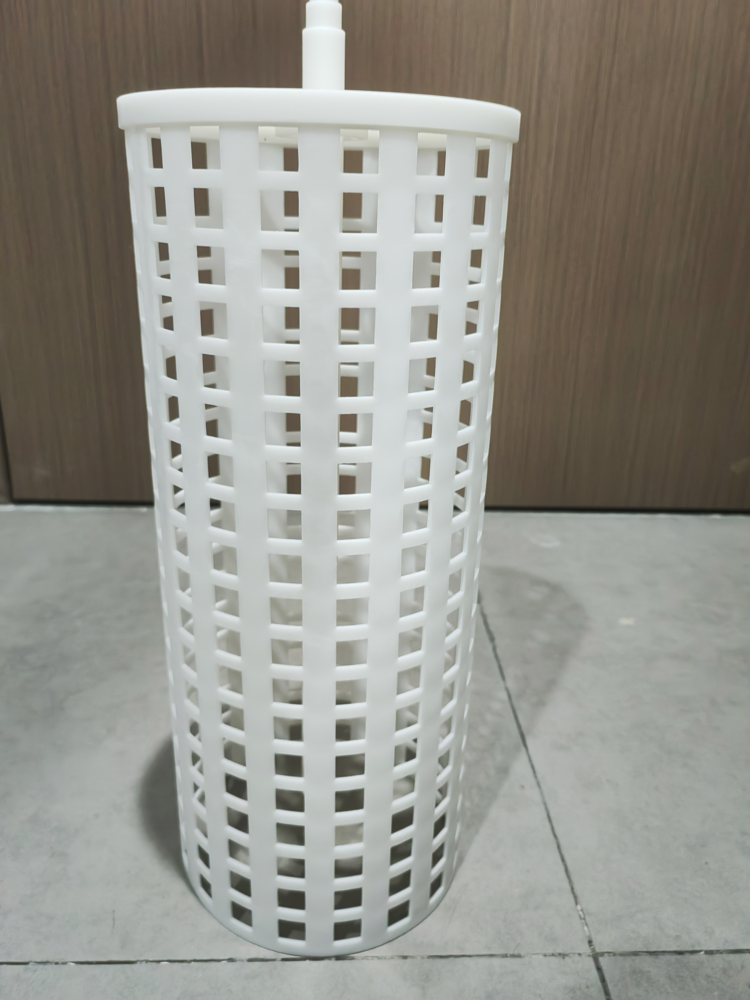
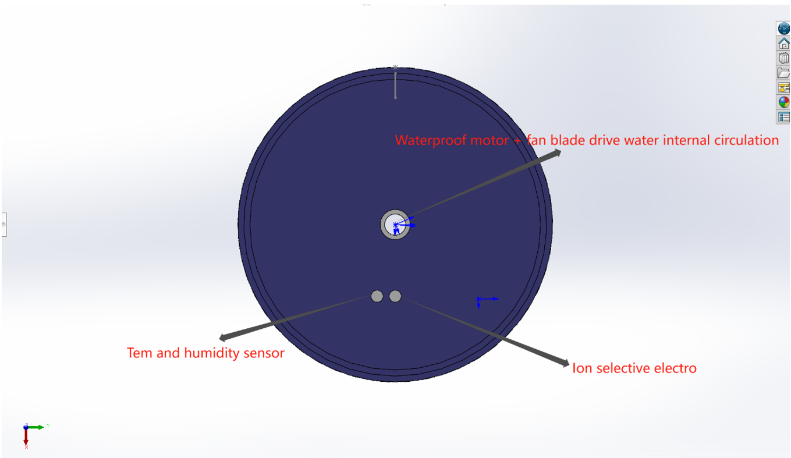
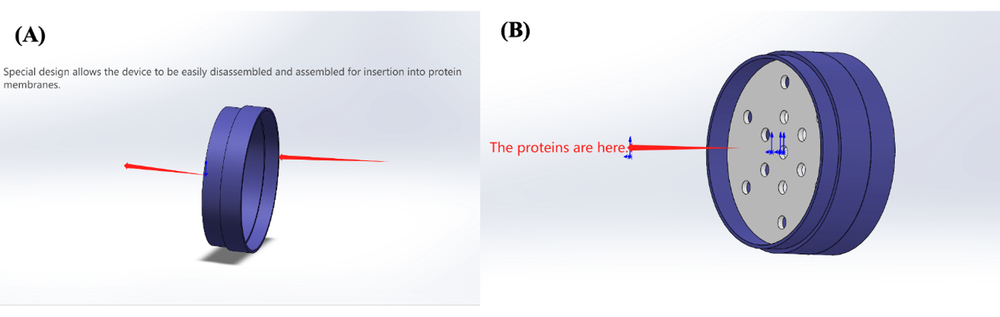
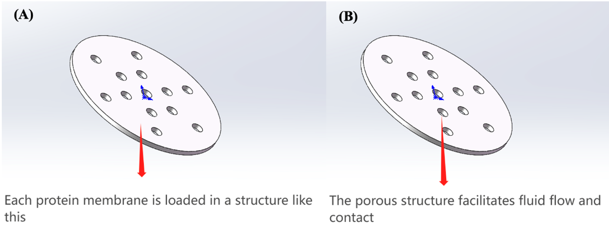
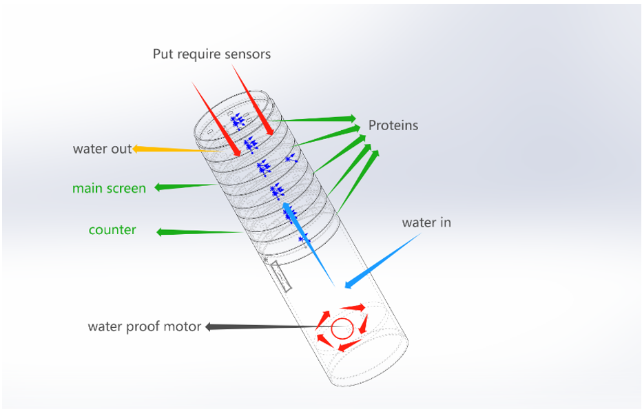
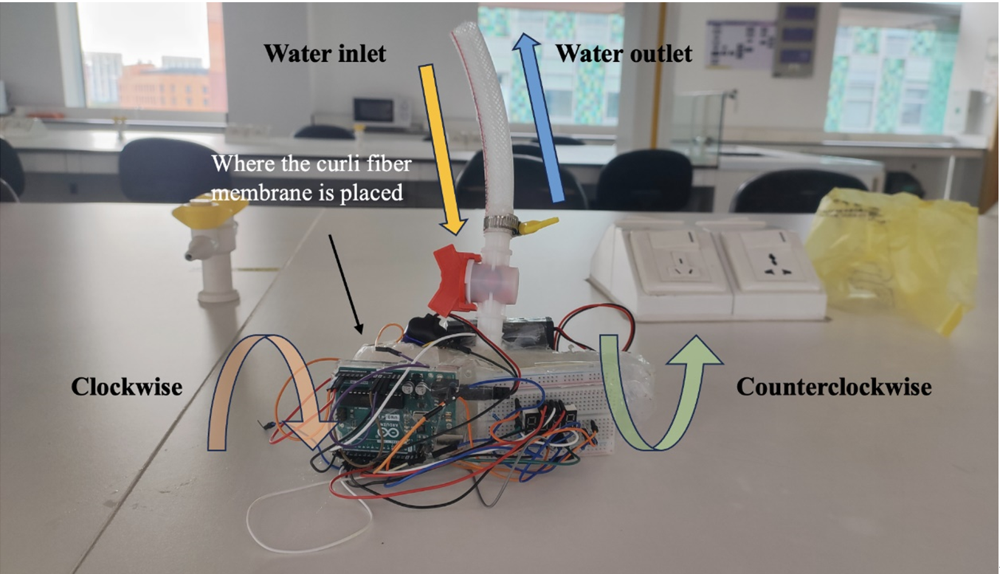
Original design media: XJTLU-China, iGEM 2023 · CC BY 4.0. CAD drawings describe designs, not validated treatment performance.
Pick-and-place gantry · with B&R · March – June 2025
A stepper-driven gantry with a pneumatic arm, coordinated by an Arduino Mega and a B&R PLC. I designed the relay interface that let the two controllers communicate safely across voltage levels.
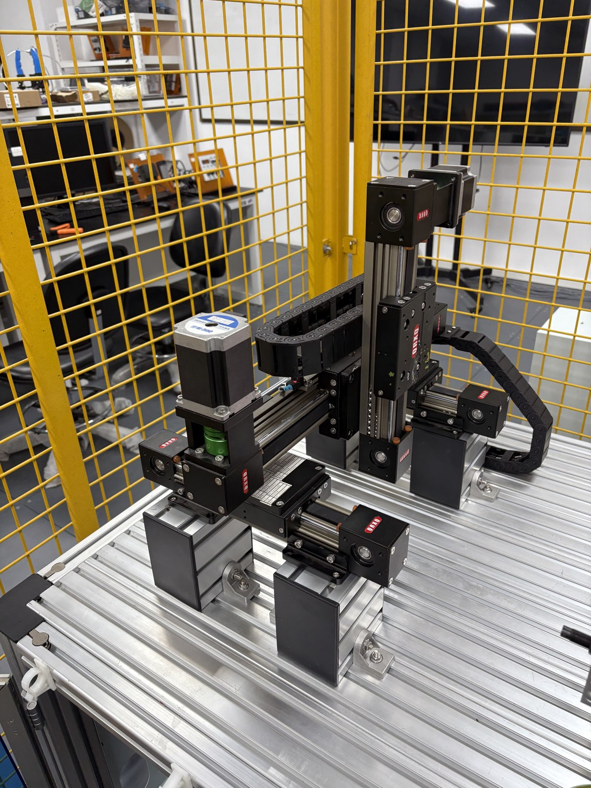
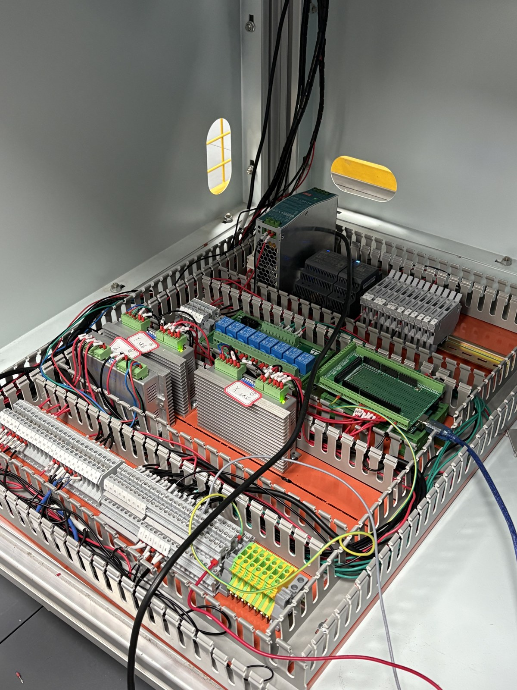
iGEM team websites · 2023 & 2024
I designed and built both XJTLU-China team wikis from scratch.
{kind=link}
{kind=link}
{kind=link}
{kind=link}
{kind=link}
{kind=link}
{kind=link}
{kind=link}
{kind=link}
{kind=link}
{kind=link}
{kind=link}
{kind=link}
{kind=link}
{kind=link}